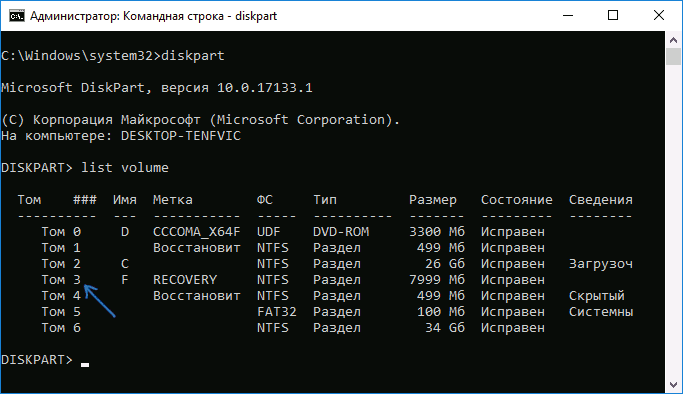
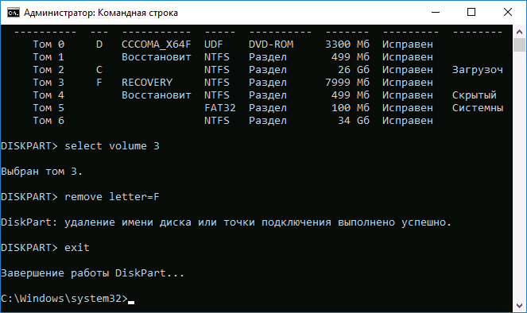

Шаги по скрытию раздела восстановления будут одинаковыми в Windows 10, 8 и Windows 7.
- Запустите командную строку или PowerShell от имени администратора (см. Как запустить командную строку от имени администратора). В командной строке по порядку введите следующие команды.
- diskpart
- list volume (В результате выполнения этой команды будет отображен список всех разделов или томов на дисках. Обратите внимание на номер раздела, который нужно убрать и запомните его, далее этот номер буду указывать как N).

- select volume N
- remove letter=БУКВА (где буква — буква, под которой диск отображается в проводнике. Например, команда может иметь вид remove letter=F)

- exit
- После выполнения последней команды закройте командную строку.
На этом весь процесс будет завершен — диск исчезнет из проводника Windows, а вместе с ним и уведомления о том, что на диске недостаточно свободного места.